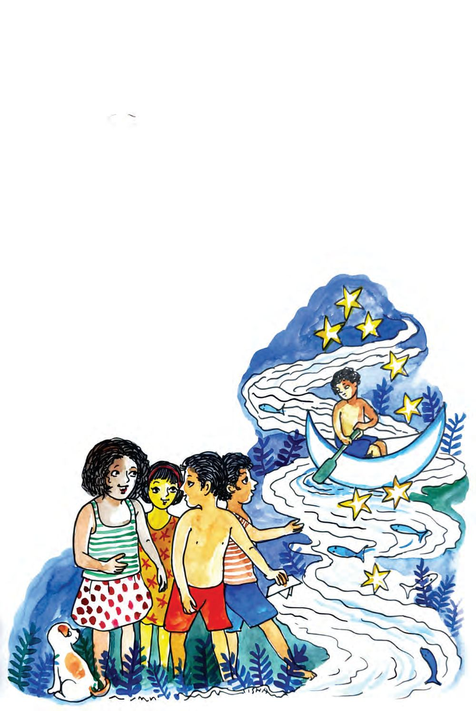
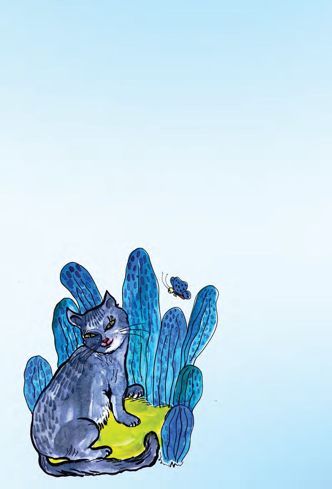
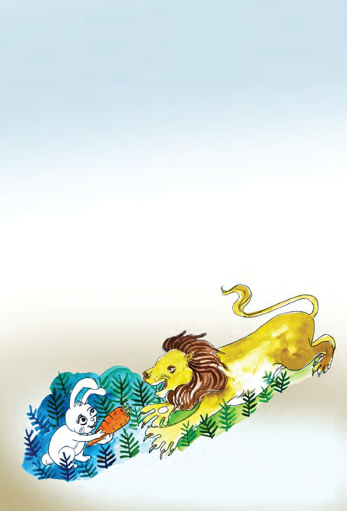
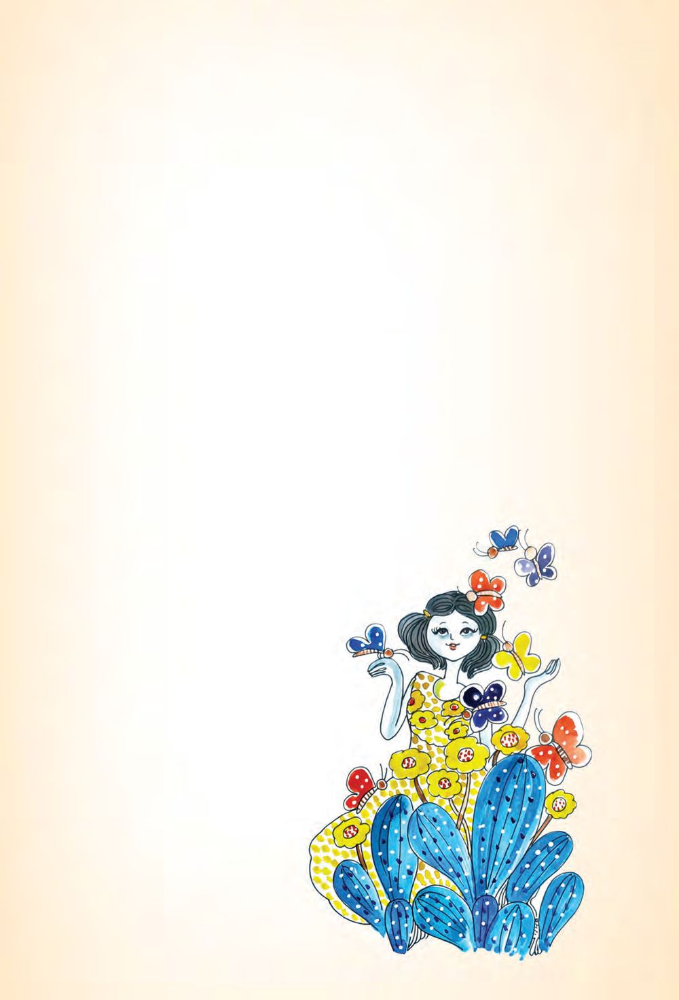
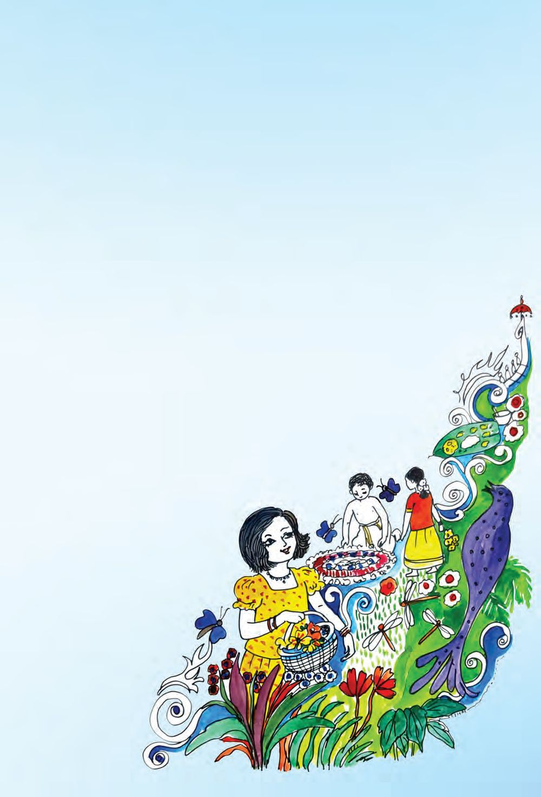
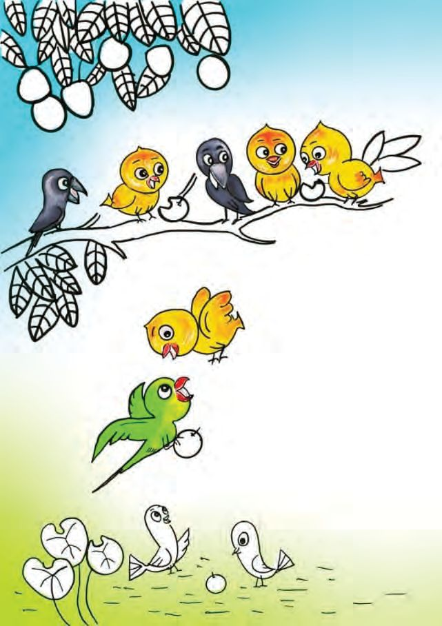
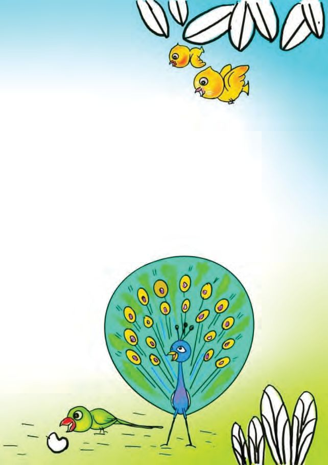

വായിക്കാം രസിക്കാം കൂട്ടുകാരേ മഴ ചൊൊരിഞ്ഞു പുഴ കവിഞ്ഞു പുഴ കടക്കാൻ പുതിയ തോോണി പുതിയ തോോണി തുഴഞ്ഞു പോോകാൻ തുണ വരുമോോ കൂട്ടുകാരേ കഥ പറയും കൂട്ടുകാരേ കളി പറയും കൂട്ടുകാരേ ഒ.എൻ.വി
87

വായിക്കാം രസിക്കാം കൂട്ടുകാരേ മഴ ചൊൊരിഞ്ഞു പുഴ കവിഞ്ഞു പുഴ കടക്കാൻ പുതിയ തോോണി പുതിയ തോോണി തുഴഞ്ഞു പോോകാൻ തുണ വരുമോോ കൂട്ടുകാരേ കഥ പറയും കൂട്ടുകാരേ കളി പറയും കൂട്ടുകാരേ ഒ.എൻ.വി
87

പൂച്ച എന്റെ കുറിഞ്ഞിപ്പൂച്ച അന്തസ്സുള്ളളൊരു പൂച്ച കൺമഷിപോോലെ കറുപ്പ് കണ്ണുകൾ രണ്ടും മഞ്ഞ പൂവിതൾപോോലൊൊരു നാവ് പൂങ്കുലപോോലൊൊരു വാല് കുറുകുറെയെന്നു കുറുങ്ങി കുഞ്ഞിയുറക്കം തൂങ്ങി വെയിലിലിരുന്നു മയങ്ങും എന്റെ കുറിഞ്ഞിപ്പൂച്ച അന്തസ്സുള്ളളൊരു പൂച്ച സുഗതകുമാരി
88

പാവം മുയൽക്കുട്ടി കാരറ്റ് തിന്നുകയായിരുന്നു. ഒരു സിംഹം വാ തുറന്ന് അതിൻ്റെ മുന്നിൽ ചാടി വീണു. മുയൽക്കുട്ടി സിംഹത്തെ നോോക്കി. സിംഹം മുയൽക്കുട്ടിയെയും. ‘‘ന്നാ, തിന്നോോ’’ മുയൽക്കുട്ടി കൈയിലുള്ളത് വേഗം സിംഹത്തിന് നീട്ടി. അതും വാങ്ങി സിംഹം നടന്നു പോോയി. ‘‘പാവം!’’ മുയൽക്കുട്ടി സിംഹത്തെ നോോക്കി പറഞ്ഞു.
89

പൂമ്പാറ്റത്തതോട്ടം
വായിക്കാം രസിക്കാം
മണ്ണ് നനഞ്ഞു നനഞ്ഞ മണ്ണിൽ അമ്മു വിത്തിട്ടു. നിറയെ ചെടികളുണ്ടായി. അമ്മുവിന് സന്തതോഷമായി. ചെടികളിൽ നിറയെ മഞ്ഞപ്പൂക്കൾ വിരിഞ്ഞു. പൂമ്പാറ്റകൾക്ക് സന്തതോഷമായി. അവ മറ്റെങ്ങും പോോയില്ല. അമ്മുവിൻ്റെ കൂടെ കളിച്ചു. ചെടികൾ അവൾക്ക് വിത്തുകൾ നൽകി. അത് അവൾ കുലുക്കി നോോക്കി. കിലുകിലു കിക്കിലു ഇത് കേട്ട് പൂമ്പാറ്റകൾ ചിറക് ഇളക്കി നൃത്തമാടി. അതൊൊരു പൂമ്പാറ്റത്തതോട്ടമായി.
90

പൂമണമുള്ള കുയിൽപ്പാട്ട്
വായിക്കാം രസിക്കാം
ഓണം വരവായ് അമ്മയറിഞ്ഞോോ? ഓണത്തപ്പനുമുണ്ടത്രേ! ഓണക്കോോടിയും ഓണപ്പാട്ടുംം ഓണക്കളികളുമുണ്ടമ്മേ. പുതിയൊൊരു പാട്ടുപാടുംം ഞാൻ പതുമ മണക്കും പൂപ്പാട്ട്. പുതിയൊൊരു താളം പുത്തനൊൊരീണം പുതിയൊൊരു ഭാഷയിലാവേണം. തുമ്പപ്പൂവിൻ കുഞ്ഞിക്കാതിൽ തുമ്പികൾ പാടുമൊൊരീണത്തിൽ, മന്ദാരത്തിൻ ചെവിയിലശോോകം കളിപറയുന്നൊൊരു താളത്തിൽ, മുക്കുറ്റിക്കവിൾ തൊൊട്ടുതലോോടുംം കുഞ്ഞിക്കാറ്റിൻ കുറുമൊൊഴിയിൽ, ഓണത്തപ്പനെ വരവേല്ക്കാൻ പൂമണമുള്ള കുയിൽപ്പാട്ട്. നാടുമുഴുക്കെയും ഓണനിലാവിൻ നന്മ പരത്തും പൂപ്പാട്ട്.
91

വായിക്കാം രസിക്കാം
ഒന്നാണ് ദേശാടകരാം കിളികളൊൊരിക്കൽ വിരുന്നു വന്നൂ, നാട്ടിൽ. വിശന്നുവന്നവർ ദാഹിക്കുന്നവർ തളർന്നിറങ്ങീ നാട്ടിൽ. മധുരിക്കുന്ന പഴങ്ങൾ നൽകി മരങ്ങളവരെ വിളിച്ചു. തണുത്തകാറ്റിൽ ഇലകൾ മുക്കി ചില്ലകളവരെ വീശി.
92

നാട്ടുകിളികളിൽ ചിലരിതുകണ്ട് കലപില കൂട്ടാനെത്തി. പരദേശികളാം പറവകളിവിടെ ചേക്കേറരുതെന്നായി. തളർന്ന കിളികൾ ചിറകും വീശി പറന്നുപൊൊങ്ങാൻ നിൽക്കെ മറ്ററൊരു കൂട്ടം കിളികൾ സ്നേഹം പകർന്നുനൽകാനെത്തി. ദേശമതേതായാലും നമ്മൾ പറവകളെന്നതു നേര്. അതിരുകൾ ഏതായാലും നമ്മൾ ഒന്നാണെന്നതു നേര്.
93
പ്രിയ രക്ഷിതാവേ, പൊൊതുവിദ്യയാലയത്തിൽ കുട്ടിയെ ചേർത്തതിൽ താങ്കളെ അഭിനന്ദിക്കുന്നു. ഒന്നാം ക്ലാസിൽ ചേരുന്ന ഓരോോ കുട്ടിയും ഒന്നാം ക്ലാസ് പൂർത്തിയാകുന്നതോോടെ തെറ്റുകൂടാതെ ചെറുവാക്യങ്ങൾ സ്വന്തമായി എഴുതാനും ലഘുബാലസാഹിത്യകൃതികളും മറ്റു വായനസാമഗ്രികളും വായിക്കുവാനും കഴിവ് നേടത്തക്കവിധമാണ് ഈ പുസ്തകം തയ്യാറാക്കിയിട്ടുളളത്. ഇക്കാര്യത്തിൽ ധാരണ ലഭിക്കുന്നത് കുട്ടിയെ പഠനത്തിൽ സഹായിക്കുന്നതിന് കൂടുതൽ പ്രയോോജനപ്പെടും. മലയാളത്തിലെ എല്ലാ ലിപികൾക്കും പരിഗണന. കുട്ടിക്ക് എഴുതാനും വായിക്കാനുമുള്ള കഴിവ് നേടുന്നതിന് സ്വവരങ്ങൾ, വ്യയഞ്ജനങ്ങൾ, ചില്ലുകൾ, യോോജിപ്പിച്ചെഴുതാവുന്ന കൂട്ടക്ഷരങ്ങൾ, ചന്ദ്രക്കലയിട്ട് ഇണക്കിയെഴുതാവുന്ന കൂട്ടക്ഷരങ്ങൾ, സ്വവരവ്യയഞ്ജനങ്ങളുടെ ഉപചിഹ്നങ്ങൾ എന്നിവ പഠിക്കേണ്ടതുണ്ട്. കുറച്ച് കൂട്ടക്ഷരങ്ങൾ ഒഴികെയുളള എല്ലാ ലിപികളുംം ഒന്നാം ക്ലാസ് കഴിയുമ്പോോഴേക്കും കുട്ടി പരിചയപ്പെടുകയും അവ ഉപയോോഗിച്ച് എഴുതാനും വായിക്കാനുമുളള കഴിവാർജ്ജിക്കുകയും ചെയ്യും അക്ഷരങ്ങൾ പരിചയപ്പെടുത്തുന്ന രീതി എഴുത്തിലും വായനയിലും കൂടുതലായി ഉപയോോഗിക്കുന്ന അക്ഷരങ്ങൾക്കാണ് ആദ്യയപരിഗണന നൽകുന്നത്. ഓരോോ പാഠത്തിലും ഊന്നൽ നൽകുന്ന ലിപികൾ ചെറുവാക്യയങ്ങളിൽ ഉൾപ്പെടുത്തി ഒരു ആശയവുമായി ബന്ധിപ്പിച്ച് അവതരിപ്പിക്കുന്നു. ഓരോോ അക്ഷരത്തിന്റെയും എഴുത്തുരീതി (ഘടന), ഉച്ചാരണം എന്നിവ വ്യയക്തമാക്കുന്ന വിധത്തിൽ അക്ഷരം പരിചയപ്പെടുത്തും. അക്ഷരങ്ങളുടെയും വാക്കുകളുടെയും വിവിധ സന്ദർഭങ്ങളിലെ സ്വാഭാവിക ആവർത്തനത്തിനുളള സാധ്യയതകൾ പരമാവധി പ്രയോോജനപ്പെടുത്തിയിട്ടുണ്ട്. ഇത് അക്ഷരങ്ങൾ ഉറയ്ക്കുന്നതിന് സഹായിക്കും. ഓരോോ ദിവസവും പരിചയപ്പെടുത്തുന്ന അക്ഷരങ്ങൾ തുടർന്നുളള ദിവസങ്ങളിലും എഴുത്തിനും വായനയ്കും പ്രയോോജനപ്പെടുത്തും. ഒന്നാമത്തെ പാഠത്തിൽ പരിചയപ്പെടുത്തുന്ന അക്ഷരങ്ങൾ തുടർന്നുളള പാഠങ്ങളിലും വീണ്ടും വരത്തക്കവിധമാണ് ക്രമീകരിച്ചിട്ടുളളത്. ഉദാഹരണം ഒന്നാം യൂണിറ്റിൽ കുട്ടി പരിചയപ്പെട്ട പ, ട, റ, വ, ക, ത, ല, ന എന്നീ അക്ഷരങ്ങളുംം ാ ാ, ീ ീ എന്നീ ഉപചിഹ്നങ്ങളുംം തുടർന്നുള്ള എല്ലാ പാഠങ്ങളിലും പല തവണ ആവർത്തിക്കുന്നുണ്ട്. ഇതുപോോലെ മറ്റ് അക്ഷരങ്ങളുടെയും ചിഹ്നങ്ങളുടെയും പരമാവധി പുനരനുഭവവും ഒരുക്കിയിട്ടുണ്ട്. എല്ലാവർക്കും അവസരവും പിന്തുണയും ലഭിക്കുംവിധമുളള സമയവിന്യാാസം ഓരോോ പിരീഡിലും അക്ഷരങ്ങൾക്ക് പ്രാധാന്യം ലഭിക്കുന്നതിന് സഹായകമായ ലേഖന പ്രക്രിയയും വായനപ്രവർത്തനവുമാണ് ഉള്ളത്. ചെറിയ ക്ലാസുകളിൽ വ്യയക്തിഗത ശ്രദ്ധ കൂടുതലായി നൽകേണ്ടതുണ്ട്. എല്ലാ കുട്ടികൾക്കും അവസരവും പിന്തുണയും ലഭിക്കണമെങ്കിൽ കൂടുതൽ സമയം ആവശ്യയമാണ്. അതിനാൽ രണ്ടു പീരിഡുകൾ ചേർത്തുളള ഭാഷക്ലാസുകളാണ് ഉണ്ടാവുക. ലഘുവായനസാമഗ്രികൾ പരിചയപ്പെടുന്ന അക്ഷരങ്ങളുംം പദങ്ങളുംം വാക്യയങ്ങളുംം ഉൾപ്പെടുന്ന ലഘുവായനസാമഗ്രികൾ ഓരോോ ദിവസവും കുട്ടികൾക്ക് സ്വവതന്ത്രവായനയ്കായി നൽകും. ഇത് അവരെ ക്രമേണ സ്വവന്തമായി വായിക്കുന്നതിലേക്കും എഴുതുന്നതിലേക്കും നയിക്കും. സഹായത്തതോടെയുളള രചന കുട്ടിയുടെ പഠനത്തിൽ രക്ഷിതാവിനും നിർണായകപങ്ക് വഹിക്കാനാകും. രക്ഷിതാക്കളുടെ പിന്തുണയോോടെയുളള എഴുത്തും വായനയും തുടർപ്രവർത്തനമായി വീട്ടിൽ നടക്കേണ്ടതുണ്ട്. ഇത് കുട്ടി യെ സംബന്ധിച്ചിടത്തോോളം ആസ്വാദ്യയമാകണം. 2023 - 24 അക്കാദമിക വർഷം നടപ്പിലാക്കി വിജയം കണ്ട സംയുക്തഡയറി സമ്പ്രദായം തുടരുംം. കൂടാതെ കൂടുതൽ സഹായം ആവശ്യയമായി വരുന്ന കുട്ടികൾ (തുടർച്ചയായ ഹാജരില്ലായ്മമൂലവും മറ്റുംം) ഉണ്ടാകും. അവർക്ക് ടീച്ചർ കൂടുതൽ സഹായം നൽകും.
94
അനുഭവവൈവിധ്യം ആകർഷകമായ ചിത്രങ്ങളുംം കഥകളുംം കവിതകളുംം കലയുടെയും (അഭിനയം, ചിത്രരചന, സംഗീതം) പ്രവൃത്തിപരിചയത്തിന്റെയും സാധ്യയതകളുംം പ്രയോോജനപ്പെടുത്തിയുളള ഭാഷാപഠനമാണ് നടക്കുന്നത്. ഇത് അനുഭവവൈവിധ്യം സൃഷ്ടിക്കും. കുട്ടിയുടെ ഭാഷാപഠനതാൽപര്യംം വളർത്തുകയും ചെയ്യും. പാഠപുസ്തകത്തതോടൊൊപ്പം പ്രവർത്തനപുസ്തകവും ഒന്നാം ക്ലാസിൽ കുട്ടിക്ക് എഴുത്തിനും വായനയ്കും മറ്റുഭാഷാപ്രവർത്തനങ്ങൾക്കും സഹായകമായ പ്രവർത്തനപുസ്തകം കൂടി പാഠപുസ്തകത്തതോടൊൊപ്പം തയ്യാറാക്കിയിട്ടുണ്ട്. പാഠപുസ്തകവും പ്രവർത്തന പുസ്തകവും ചേരുമ്പപോൾ മാത്രമാണ് കുട്ടിക്ക് ലഭിക്കുന്ന ഭാഷാനുഭവം സമഗ്രമാകുന്നത്. രൂപീകരണപാഠങ്ങൾ അച്ചടിച്ചു നൽകുന്ന പാഠങ്ങൾക്കുപുറമേ ക്ലാസിൽ കുട്ടികളുടെ പങ്കാളിത്തത്തോോടെ വികസിക്കുന്ന പാഠങ്ങളുംം ഉണ്ടാകും. ഇത്തരം രൂപികരണപാഠങ്ങളിലെ വാക്യയങ്ങൾ എഴുതാൻ പ്രവർത്തന പുസ്തകത്തിലാണ് ഇടം. ഊന്നൽ നൽകുന്ന അക്ഷരങ്ങൾക്ക് പ്രാധാന്യയം ലഭിക്കുന്നവയാണ് എല്ലാ രൂപീകരണപാഠങ്ങളും. തീമുകളുമായി ബന്ധപ്പെടുത്തിയുളള പഠനം പറവകൾ, പൂക്കൾ, വിനോോദം, വളർത്തുജീവികൾ, കൂടുകൾ, ആഹാരം, ആകാശം, വെളളം, പഴങ്ങൾ, വാഹനം, വീട്, ഉത്സവം, പച്ചക്കറികൾ, ചെറുജീവികൾ, മണ്ണും കൃഷിയും, വസ്ത്രം, ആരോോഗ്യംം, തൊൊഴിലും ഉപകരണങ്ങളുംം, കാട്, കടൽ എന്നിവയാണ് പാഠങ്ങളുടെ മുഖ്യയപ്രമേയങ്ങൾ. പ്രീപ്രൈമറി/അങ്കണവാടി തലത്തിൽ പരിഗണിച്ച തീമുകളിലെ ആശയപരമായ വളർച്ച ഉറപ്പാക്കിയും തുടർപഠനത്തിന് അടിസ്ഥാനമൊൊരുക്കിയും പരിസരപഠനത്തിന്റെ ഉളളടക്കതലം പരിഗണിച്ചുമാണ് ഈ തീമുകൾ നിശ്ചയിച്ചിട്ടുളളത്. ഭാഷ, പരിസരപഠനം, കലാവിദ്യയാഭ്യയാസം, പ്രവൃത്തിപരിചയപഠനം, കായിക വിദ്യയാഭ്യയാസം എന്നിവ ഈ തീമുകളുമായി ബന്ധിപ്പിച്ച് അവതരിപ്പിക്കുന്നു. സമഗ്രവികാസത്തിന് പ്രാധാന്യയം വൈജ്ഞാനിക വികാസം, ഭാഷാവികാസം, കായികവികാസം, സാമൂഹിക വൈകാരിക വികാസം, സൗന്ദര്യയാത്മക സർഗാത്മകവികാസം എന്നിവയ്ക്കെല്ലാം പ്രാധാന്യയം ലഭിക്കുന്നതിനു സഹായമായ രീതിയിലാണ് ഒന്നാം ക്ലാസിലെ പഠനപ്രവർത്തനങ്ങൾ. കുട്ടിയുടെ സമഗ്രവികാസം സാധ്യമാക്കുന്ന തിനാണ് ഇത് വഴിയൊൊരുക്കുന്നത്. പ്രായോോഗികാനുഭവത്തിന്റെ പിൻബലം പാഠപുസ്തകപരിഷ്കരണത്തിന്റെ മുന്നോോടിയായി ഒന്നാംക്ലാസിലെ കുട്ടികളുടെ എഴുത്തും വായനയും മെച്ചപ്പെടുത്തുന്നതിനുളള രീതികൾ വികസിപ്പിക്കുന്നതിന് സംസ്ഥാന വിദ്യാാഭ്യാാസ ഗവേഷണപരിശീലന സമിതി (എസ്.സി.ഇ.ആർ.ടി) നേതൃത്വം നൽകി. 2023-24 അക്കാദമിക വർഷം ഒന്നാംക്ലാസുകളിൽ പ്രയോോഗിച്ച നൂതനമായ ഭാഷാ പഠനരീതികൾ ഗുണപരമായ മാറ്റങ്ങളാണ് കുട്ടികളിൽ ഉണ്ടാക്കിയത്. ആ അനുഭവങ്ങളുടെകൂടി അടിസ്ഥാനത്തിലാണ് ഈ പാഠപുസ്തകം ചിട്ടപ്പെടുത്തിയിട്ടുളളത്. പ്രതിമാസ ക്ലാസ് പി.ടി.എ. എല്ലാ രക്ഷിതാക്കളുംം പങ്കെടുക്കുന്ന പ്രതിമാസ ക്ലാസ് പി.ടി.എ. യോോഗങ്ങൾ കുട്ടിയുടെ പഠനപുരോോഗതി ചർച്ച ചെയ്യുന്നതിനുളള വേദിയാണ്. വിദ്യാാലയപ്രവർത്തനങ്ങളിൽ രക്ഷിതാവിന്റെ താൽപര്യയവും സാന്നിധ്യയവും കുട്ടിക്ക് പ്രചോോദനം നൽകും. ടീച്ചറുംം രക്ഷിതാക്കളുംം ചേർന്ന് കുട്ടിക്കാവ ശ്യയമായ പിന്തുണ നൽകേണ്ടതുണ്ട്. വിദ്യാാഭ്യാാസ വകുപ്പും ഒപ്പമുണ്ട്. കുട്ടിക്കുണ്ടാകുന്ന പ്രയാസങ്ങളുംം പ്രശ്നങ്ങളുംം അപ്പപ്പോോൾത്തന്നെ അധ്യാാപകരുടെ ശ്രദ്ധയിൽപ്പെടുത്താൻ ശ്രമിക്കുമല്ലോോ. കുട്ടിയുടെ കഴിവുകൾ അംഗീകരിക്കാൻ ശ്രദ്ധിക്കുകയും വേണം.
95
ഭാരതത്തിന്റെ ഭരണഘടന ഭാഗം IV ക
മൗലിക കർത്തവ്യയങ്ങൾ 51 ക. മൗലിക കർത്തവ്യയങ്ങൾ - താഴെപ്പറയുന്നവ ഭാരതത്തിലെ ഓരോോ പൗൗരന്റെയും കർത്തവ്യം ആയിരിക്കുന്നതാണ് : (ക) ഭരണഘടനയെ അനുസരിക്കുകയും അതിന്റെ ആദർശങ്ങളെയും സ്ഥാപനങ്ങ ളെയും ദേശീയപതാകയെയും ദേശീയഗാനത്തെയും ആദരിക്കുകയും ചെയ്യുക; (ഖ) സ്വാതന്ത്ര്യയത്തിനുവേണ്ടിയുള്ള നമ്മുടെ ദേശീയസമരത്തിന് പ്രചോോദനം നൽകിയ മഹനീയാദർശങ്ങളെ പരിപോോഷിപ്പിക്കുകയും പിൻതുടരുകയും ചെയ്യുക; (ഗ)
ഭാരതത്തിന്റെ പരമാധികാരവും ഐക്യയവും അഖണ്ഡതയും നിലനിർത്തുകയും സംരക്ഷിക്കുകയും ചെയ്യുക;
(ഘ) രാജ്യയത്തെ കാത്തുസൂക്ഷിക്കുകയും ദേശീയസേവനം അനുഷ്ഠിക്കുവാൻ ആവശ്യയ പ്പെടുമ്പോോൾ അനുഷ്ഠിക്കുകയും ചെയ്യുക; (ങ) മതപരവും ഭാഷാപരവും പ്രാദേശികവും വിഭാഗീയവുമായ വൈവിധ്യയങ്ങൾക്കതീ തമായി ഭാരതത്തിലെ എല്ലാ ജനങ്ങൾക്കുമിടയിൽ, സൗൗഹാർദവും പൊൊതുവായ സാഹോോദര്യയമനോോഭാവവും പുലർത്തുക, സ്ത്രീകളുടെ അന്തസ്സിന് കുറവു വരുത്തുന്ന ആചാരങ്ങൾ പരിത്യയജിക്കുക; (ച)
നമ്മുടെ സമ്മിശ്രസംസ്കാരത്തിന്റെ സമ്പന്നമായ പാരമ്പര്യയത്തെ വിലമതിക്കുകയും നിലനിറുത്തുകയും ചെയ്യുക;
(ഛ) വനങ്ങളുംം തടാകങ്ങളുംം നദികളുംം വന്യയജീവികളുംം ഉൾപ്പെടുന്ന പ്രകൃത്യാ ഉള്ള പരിസ്ഥിതി സംരക്ഷിക്കുകയും അഭിവൃദ്ധിപ്പെടുത്തുകയും, ജീവികളോോട് കാരുണ്യം കാണിക്കുകയും ചെയ്യുക; (ജ) ശാസ്ത്രീയമായ കാഴ്ചപ്പാടുംം മാനവികതയും, അന്വേേഷണത്തിനും പരിഷ്കരണ ത്തിനും ഉള്ള മനോോഭാവവും വികസിപ്പിക്കുക; (ഝ) പൊൊതുസ്വവത്ത് പരിരക്ഷിക്കുകയും ശപഥം ചെയ്ത് അക്രമം ഉപേക്ഷിക്കുകയും ചെയ്യുക; (ഞ) രാഷ്ട്രം യത്നത്തിന്റെയും ലക്ഷ്യയപ്രാപ്തിയുടെയും ഉന്നതതലങ്ങളിലേക്ക് നിരന്തരം ഉയരത്തക്കവണ്ണം വ്യയക്തിപരവും കൂട്ടായതുമായ പ്രവർത്തനത്തിന്റെ എല്ലാ മണ്ഡലങ്ങളിലും ഉൽക്കൃഷ്ടതയ്ക്കുവേണ്ടി അധ്വാനിക്കുക; (ട)
ആറിനും പതിനാലിനും ഇടയ്ക്ക് പ്രായമുള്ള തന്റെ കുട്ടിക്കോോ തന്റെ സംരക്ഷണ യിലുള്ള കുട്ടികൾക്കോോ, അതതു സംഗതി പോോലെ, മാതാപിതാക്കളോോ രക്ഷാകർ ത്താവോോ വിദ്യാാഭ്യാാസത്തിനുള്ള അവസരങ്ങൾ ഏർപ്പെടുത്തുക.